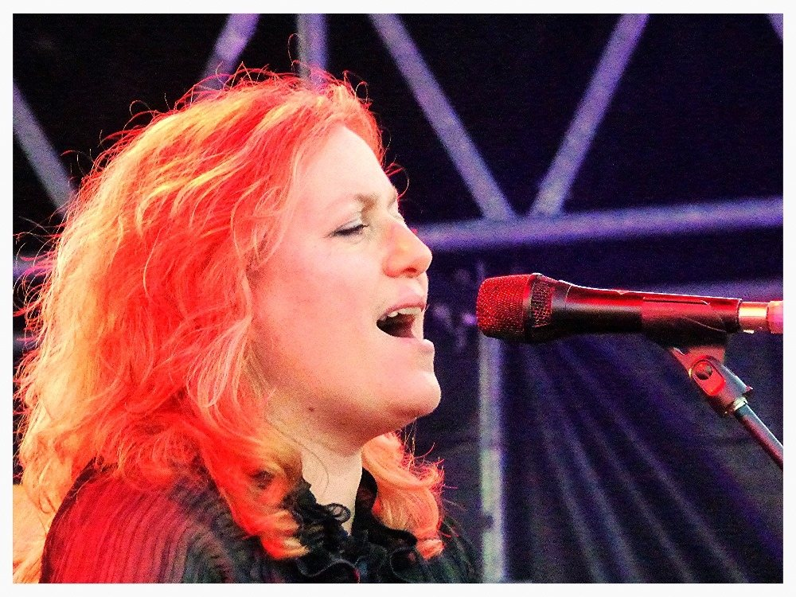
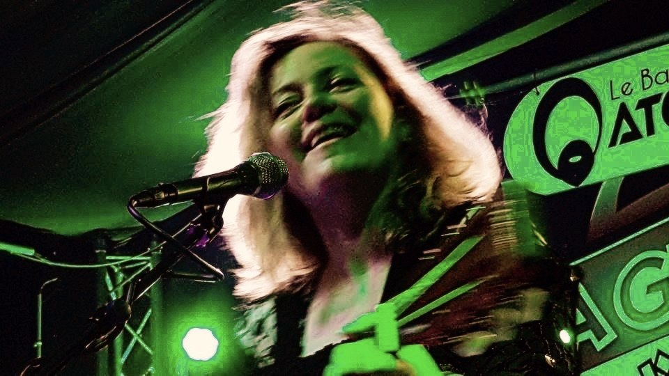
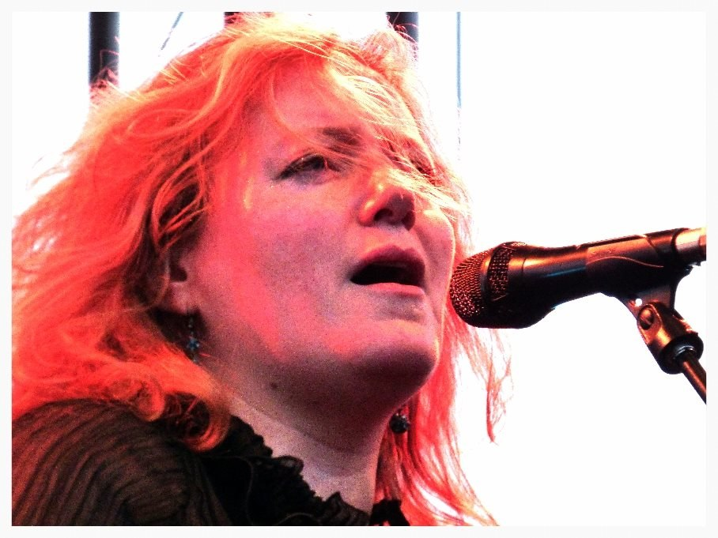
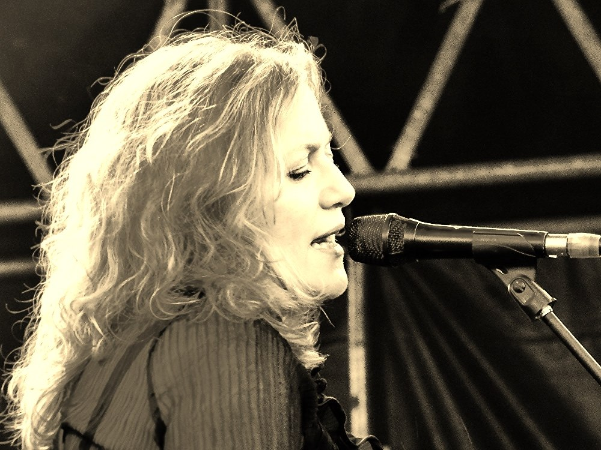

VoiceWorld
Le Chant des PossiblesLa voix, l'expression, la scène. Deux univers, une même passion : faire vivre la voix, la partager et en explorer toutes les possibilités.
Une voix, mille façons de s'exprimer.
Chanteuse et musicienne, coach vocal et scénique, j'explore la voix sous toutes ses formes. Sur scène comme dans l'accompagnement, je crois à une expression à la fois libre, personnelle et authentique.

L'Académie
de la Voix
« Si votre voix pouvait parler, que dirait-elle de vous ? »
Trouver sa voix. Développer sa présence. Oser s'exprimer.
J'accompagne les chanteurs, comédiens, artistes et professionnels qui souhaitent mieux connaître et maîtriser leur voix, enrichir leur expression et gagner en aisance face à un public.
La technique au service de l'expression.
Échanger sur votre projetSur scène
Chanter, jouer, interpréter. Faire vivre la musique.
Chanteuse et guitariste, je partage mon univers musical sur scène et à travers mes enregistrements. Retrouvez mes performances live, mes projets musicaux — dont The Brownies — et mes titres sur les plateformes d'écoute.
Une sélection de vidéos pourra être intégrée ici dans la prochaine version.



En images
Des instants de musique, de scène et de partage.





Susan Brown
Une vie à la croisée de la musique, du théâtre et de la transmission.
Franco-britannique, je me suis formée à la voix, à la scène et à la comédie musicale à Dublin, puis à la pédagogie théâtrale à la Sorbonne Nouvelle, à Paris.
Mon expérience de la scène nourrit mon accompagnement des chanteurs, comédiens et professionnels de la prise de parole. Chaque voix est singulière : mon travail consiste à aider chacun à en explorer les ressources.
Mon parcours sur LinkedInEt si on donnait
de la voix à vos idées ?
Coaching vocal, prise de parole, expression scénique ou projet musical : échangeons pour imaginer la suite.
Contact à personnaliser — nous ajouterons ici ton adresse professionnelle ou un formulaire, selon ta préférence.